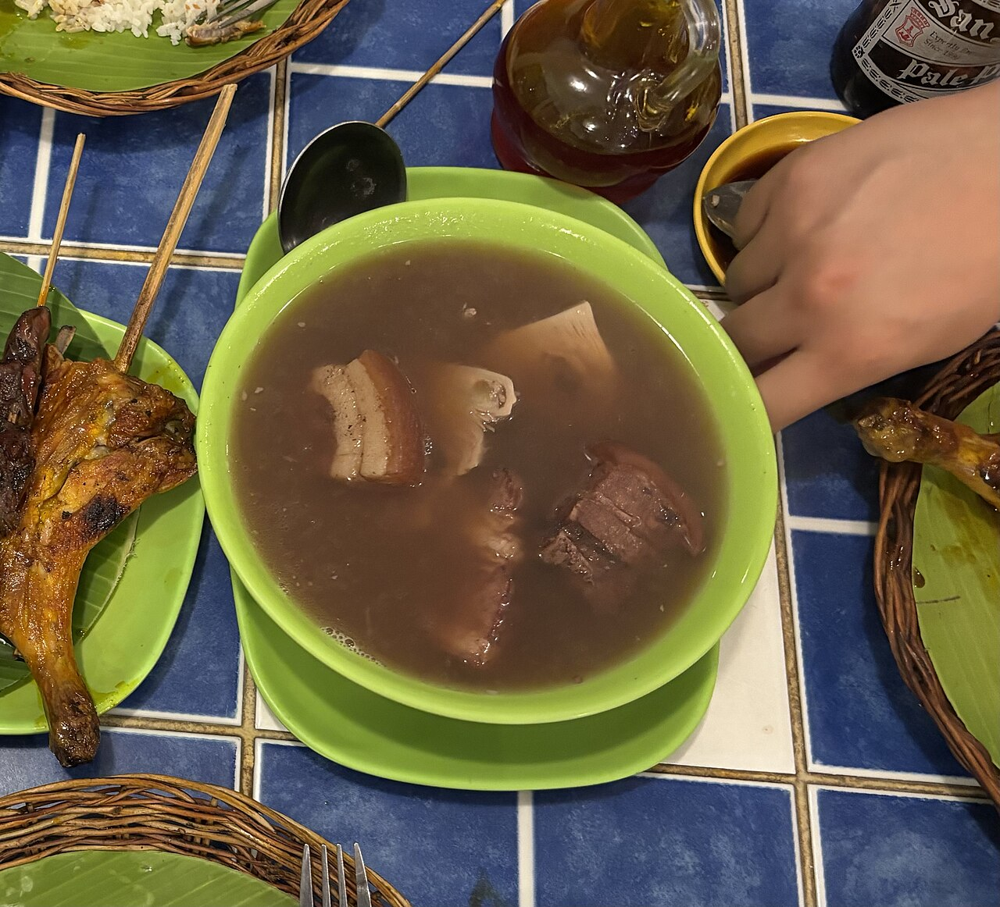
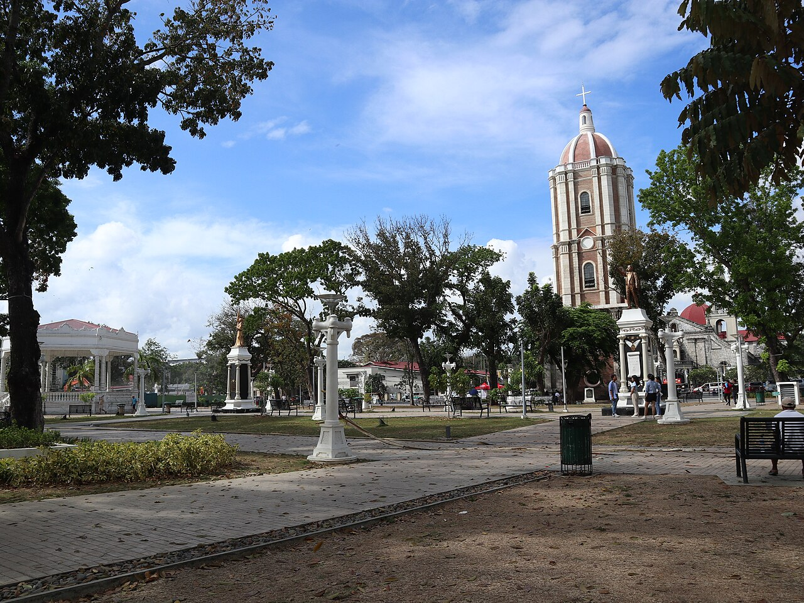
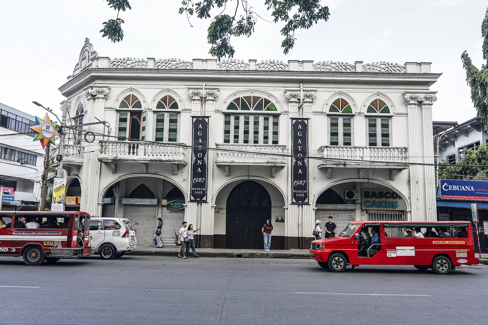
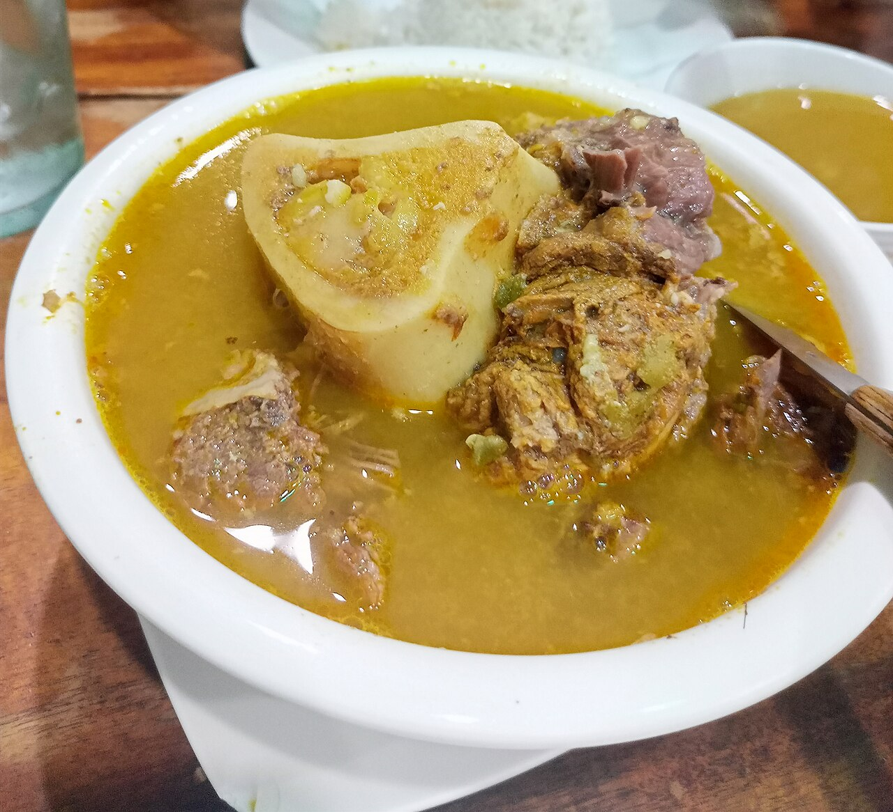
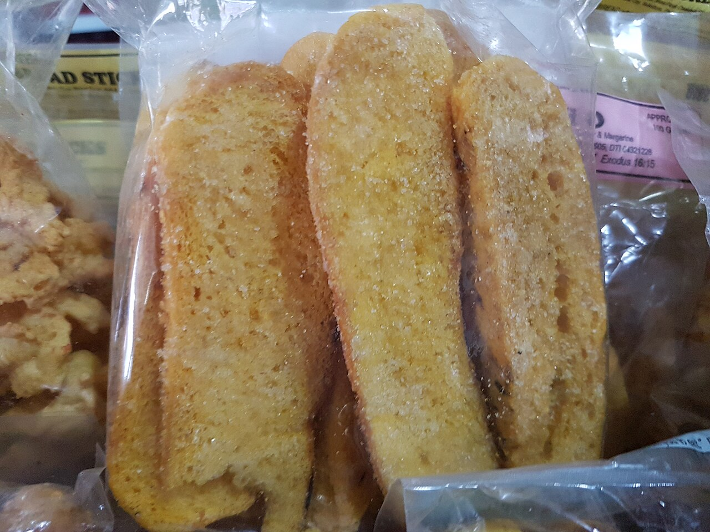

Kadyos · Baboy · Langka
KBL
Pigeon peas, pork, and young jackfruit come together in this hearty Ilonggo stew. A comforting taste of the everyday table.
Jaro · Iloilo City · Philippines
A glimpse of
Where heritage, flavor, and stories come together.
Heritage · Food · Culture · Experience

Before the houses, meet the district
Begin at Jaro Plaza, beneath the cathedral belfry. Then follow the neighborhood’s stories, one house at a time.
Follow the routeA GLIMPSE OF JARO — WHERE HERITAGE, FLAVOR, AND STORIES COME TOGETHER
The Jaro Heritage Route
Begin with the grandeur of Lizares Mansion, pause for coffee at Balay Sueño, explore the family memories of Casa Mariquit, then finish at Agatona beside the plaza. These are different encounters, connected by one district.
Jaro is best discovered with time to look around: between its old homes, the plaza, neighborhood cafés, and Ilonggo tables.
ILOILO CITY · WESTERN VISAYAS01 History · Architecture
Let the scale speak first: a long white façade, a red roof, and a tower that makes the house visible from a distance.
Look closerLizares–Gamboa Mansion · Tabuc Suba, Jaro
A Jaro landmark
The National Museum’s 2015 annual report records the Lizares–Gamboa Mansion as an old mansion in Jaro. Its broad frontage, roofline, tower, and ordered windows reward a slower look.
The grounds are part of an active institutional site. Confirm current public access before planning a visit, and enjoy the exterior from a respectful distance where access is limited.
02 Café · Architecture · Ease
Let the route slow down. Inside this heritage house, a café pause is part of the visit—not something to squeeze in after it.
Stay a littleA quiet room at Balay Sueño · Jaro, Iloilo City
A house with room to linger
Balay Sueño brings the comfort of a café into a restored ancestral setting. Come for a slower cup, a look at the timber and old details, and a different rhythm from the busy street.
Opening hours and service can change. Check with the café before making it your fixed stop.
Give the route some breathing room03 History · House tour
A Jaro home that began as a place for both business and family, and became a keeper of generations of memory.
Step inside its storyCasa Mariquit · Santa Isabel Street, Jaro
A home that holds a long view
Built in 1803 by Ramon Javellana as both a bank and a residence, Casa Mariquit later became home to his granddaughter Maria “Mariquit” Javellana and her husband, Fernando Lopez Sr.
The house’s recorded beginning—as a bank and a home.
The regional tourism account notes the original molave panels and furnishings preserved inside. A guided house tour brings the story close to the objects and rooms.
Read the source notes
04 Heritage · Food · Dining
A heritage stop beside Jaro Plaza, where an old family home has found a new life as a museum café.
Enter the storyThe Jalandoni–Montinola Ancestral Home · Agatona 1927 Museum Café
An old home, still in use
The Jalandoni–Montinola home was built in 1927. Today, Agatona 1927 gives the house another public life as a museum café, with Jaro’s layered stories close at hand.
Let the architecture set the mood, then follow your appetite around the district. Menus change; ask what is being served on the day.
Meet the flavors of IloiloThe year the Jalandoni–Montinola ancestral home was built
Jaro, Iloilo City
An Ilonggo table
Make room for the flavors between the stops: a warming bowl, a hearty local stew, and something sweet to take home.
A savory Ilonggo soup of beef shank and bone marrow, soured with batwan. Rich, gently tangy, and best enjoyed slowly.

Kadyos · Baboy · Langka
Pigeon peas, pork, and young jackfruit come together in this hearty Ilonggo stew. A comforting taste of the everyday table.

A sweet pasalubong
Crisp, twice-baked bread coated with butter and sugar. Enjoy it with coffee, or bring a little of Iloilo home to share.
The route ends. Jaro stays with you.
Leave time for the in-between moments: a photograph, a quiet room, something good at the table, a story shared by someone who knows the place.
Make a day of itPlan your visit
Four stops can fit into a half-day, but a full day leaves space for a longer meal, a café pause, and the details you notice only when you slow down.
Opening hours
Monday–Friday · 7:30 AM–5:00 PM
Daily · 9:00 AM–5:00 PM
Monday–Friday · 9:00 AM–5:00 PM
Saturday · 10:00 AM–6:00 PM
Daily · 11:30 AM–8:30 PM
A useful dry-season guide from the brochure, not a weather promise. Check the forecast before travelling.
Continue toward Iloilo City by available taxi, shuttle, ride-hailing, or other local transport.
Jeepneys, taxis, tricycles, and ride-hailing can help connect stops. Ask locally about the best way between houses.
MacArthur Drive, Tabuc Suba, Jaro, Iloilo City. Check directly for current room availability and details.
Opening hours, house tours, and access conditions can change. Confirm directly with each destination before setting out.
The people behind the journey
Contact
Jaro, Iloilo City, Philippines
+63 917 000 0000
casaculturetravel@gmail.com
Historical details are kept to claims supported by these sources. Check current tour availability, hours and public access with each site.
Image licenses are listed above; follow their terms when reusing photographs. Images are displayed with cropping and subtle color adjustments. The food photographs show real dishes.